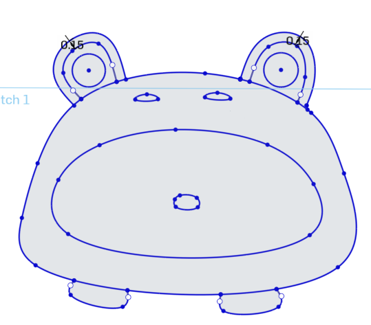
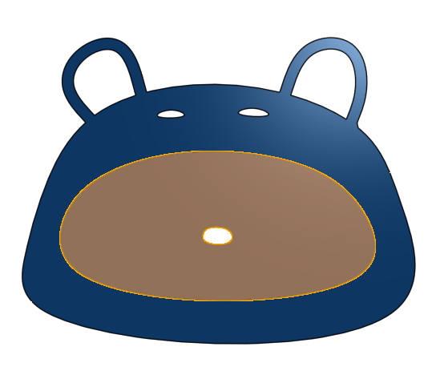
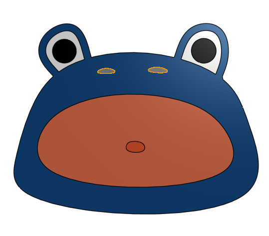
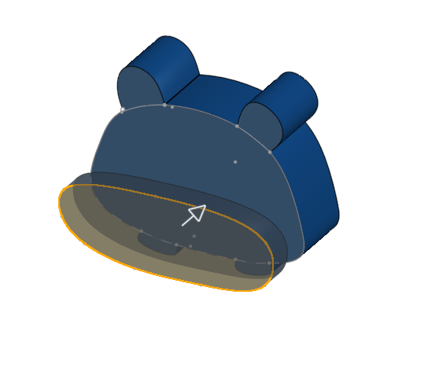

Our project officially started when we began our blueprint. The blueprint is the second stepping stone in our project (the first being our sketch.)
The steps are below.
First: Created a sketch of the frog design

Second: Mutiple Extrudes (8) of different depths

Third: Loft from Sketch 2 to Sketch 3, which was on another plane

Forth: Fillet on the Extrude 8 to create a curved back

Fifth: Boolean to combine the three parts, bringing us to our final product.
Heres a video of our Speck-tacular Toad blueprint spinning!
We printed our blueprint, and decided to change the height of the tongue -> Take a look!